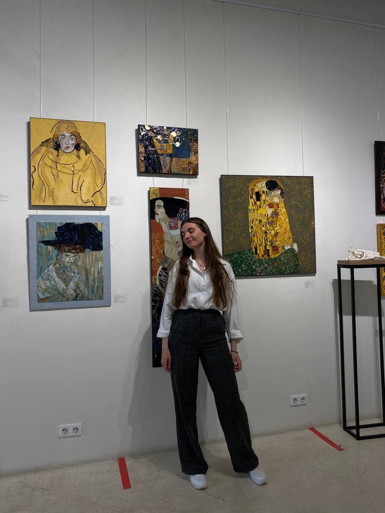
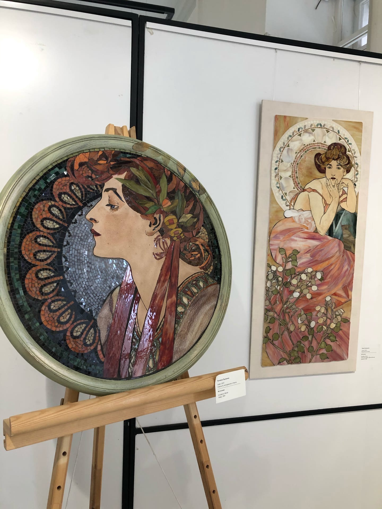
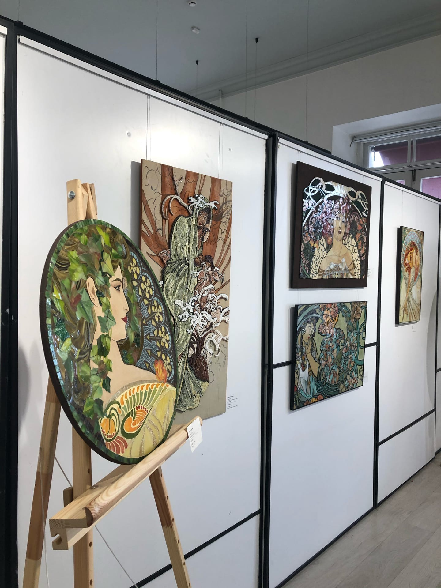
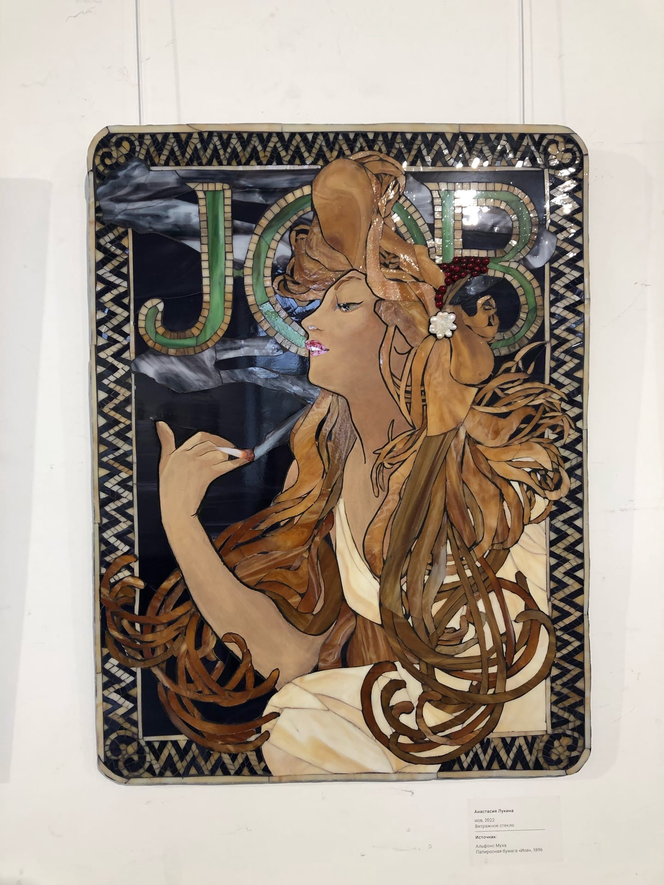
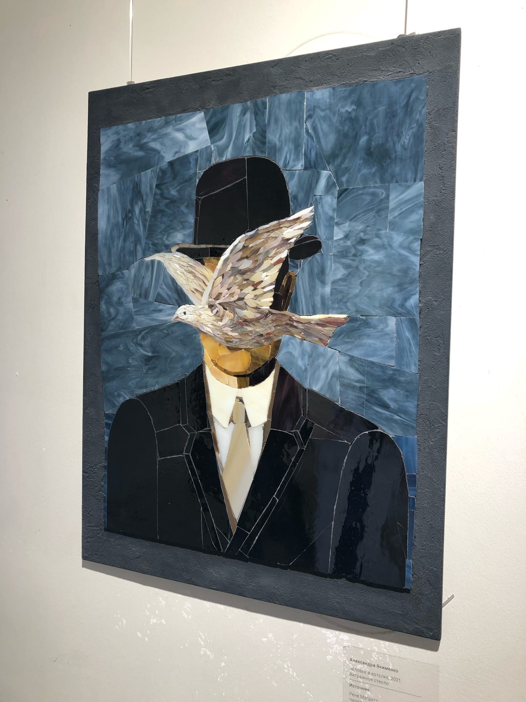
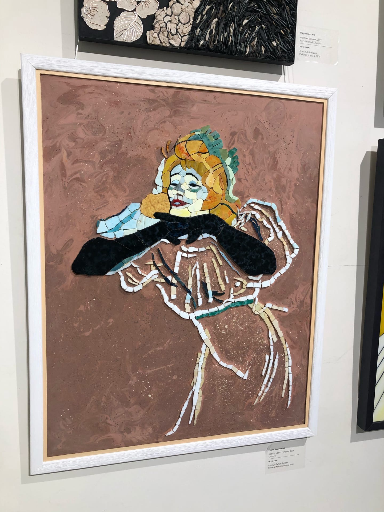
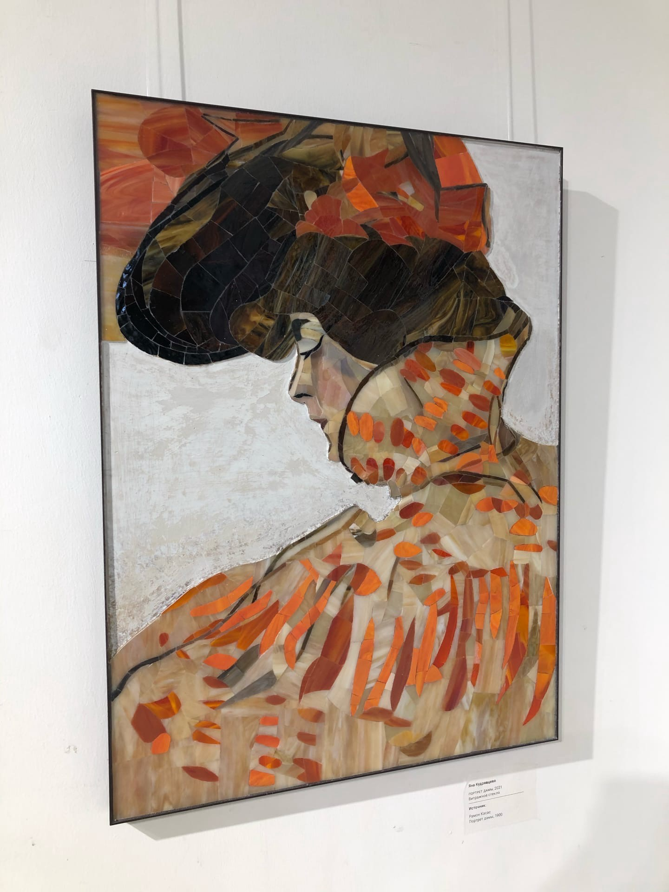
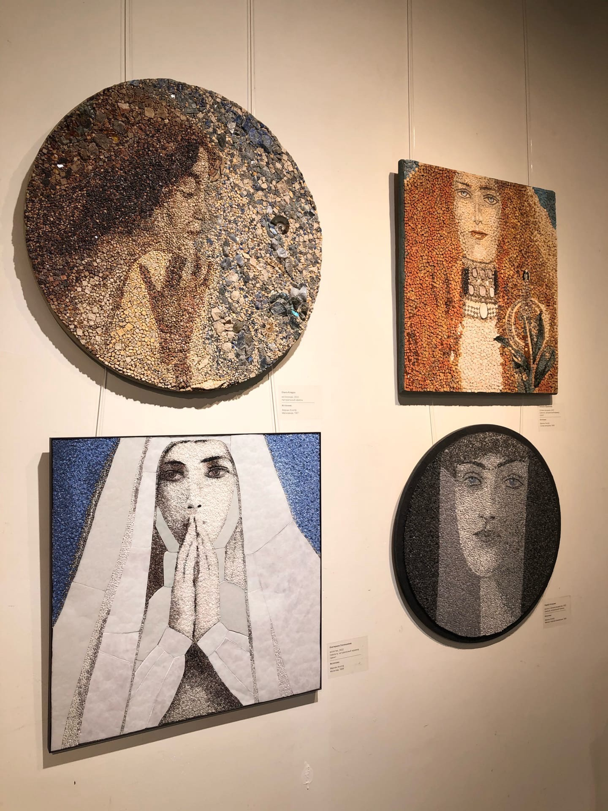

Я впервые побывала на выставке мозаичного искусства, но меня очень поразила эта техника, картины выглядят живыми и красочными.
 Каждый кусочек переливается, в каждом произведении разные текстуры и материалы, а сколько кропотливой работы ушло на эти картины...
 Мне очень запомнились копии работ А.Мухи, эти мозаики завораживают и хочется стоять и разглядывать каждый кусочек.
 Потрясающая выставка!
 